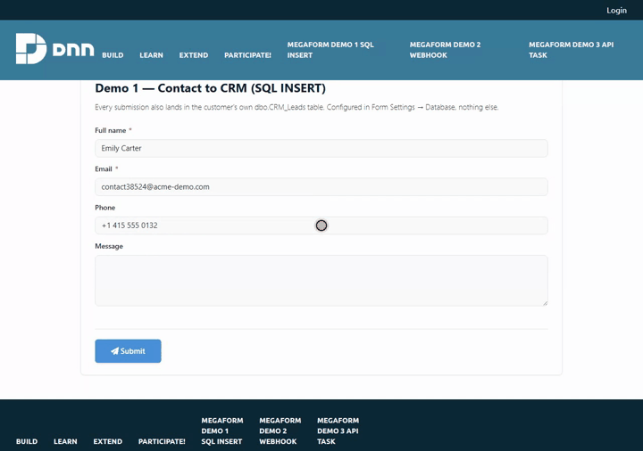
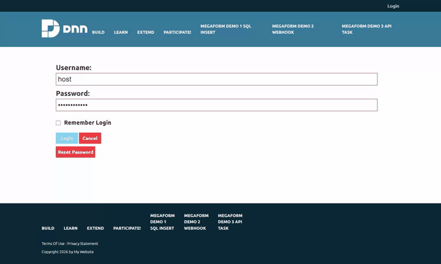

Write submissions into an existing SQL table
MegaForm stores every submission in its own tables. This page is about the other copy: writing
each submission straight into a table the customer already owns — a CRM's Leads, an ERP's
SalesOrders, a reporting staging table — with an INSERT statement and parameters you configure
in the builder. No code, no scheduled export.
If the other system speaks HTTP rather than SQL, use Push submissions to a CRM or ERP over HTTP instead.

1. Register the customer's database as a named connection
MegaForm never takes a connection string from the browser. It resolves one, server-side, from a name.
Admin → MegaForm → Database Settings → Named connections → Add.
| Field | Example |
|---|---|
| Name | CustomerCrm |
| Provider | SqlServer · PostgreSql · MySql · Sqlite |
| Connection string | Server=…;Database=CRM;User Id=megaform_writer;Password=… |
The name must start with a letter and contain only letters, digits, - or _. These names are
reserved and cannot be reused: DashboardDatabase, DefaultConnection, SiteSqlServer,
DnnDefault, MegaForm. Connection strings are stored server-side and masked whenever they are
echoed back to a browser.
To write into a table that lives in the site's own database — which is the case in the sample
below — you do not need a new connection at all: use the built-in DashboardDatabase.
Grant the account only what it needs.
INSERTon the one target table is enough.
2. Create the target table
Any table works. The examples below write to a CRM_Leads table; create something like it in the
database you want the submissions to land in:
CREATE TABLE CRM_Leads (
LeadId int IDENTITY(1,1) PRIMARY KEY,
FullName nvarchar(200) NULL,
Email nvarchar(200) NULL,
Phone nvarchar(50) NULL,
Message nvarchar(max) NULL,
Source nvarchar(50) NULL DEFAULT 'website',
CreatedUtc datetime2 NOT NULL DEFAULT SYSUTCDATETIME()
);
Make every column the form writes nullable, or give it a default. The insert is fail-soft (§6): a
NOT NULLcolumn with no default turns one mapping mistake into rows that silently never arrive, while the visitor still sees "thank you".
Once the table exists it shows up in the builder's right rail → DB tab, under Your tables — the group above MegaForm's own tables and the platform's. Clicking a table lists its real columns with their types and marks the primary key, which is the fastest way to get column names right. Tick Show system tables to see MegaForm's and the platform's tables as well; each group collapses and pages, so the list stays short whatever the database holds.

3. Configure the insert
Builder → right rail → Settings (Design) → Database → "Enable database INSERT on submit".
| Setting | What to put in it |
|---|---|
| Connection | The named connection from §1 — picked from a list the server allows, not typed. |
| Table | Pick the table; the panel then loads its real columns. |
| INSERT SQL | A single INSERT statement with :token placeholders. |
| Parameter mapping | :token → form field key. |
A worked example, exactly as shipped in Demo 1 — Contact to CRM (SQL INSERT):
INSERT INTO CRM_Leads (FullName, Email, Phone, Message, Source, SubmissionId)
VALUES (:full_name, :email, :phone, :message, 'Website form', :_submissionId)
{
":full_name": "full_name",
":email": "email",
":phone": "phone",
":message": "message",
":_submissionId": "_submissionId"
}
Rules that decide whether this works:
- A token with no mapping falls back to a field of the same name.
:emailfinds theemailfield on its own. Mapping is only needed when the column token and the field key differ. - Tokens are
:name, and MegaForm rewrites them to@namebefore execution, so the same statement runs on SQL Server, SQLite and PostgreSQL. - Values are always bound as parameters. Nothing a visitor types is ever concatenated into SQL.
- A field left blank sends
NULLfor numeric and date columns rather than an empty string, which would otherwise fail with "Error converting data type nvarchar to numeric". - Only one
INSERTis accepted. Anything else —UPDATE,DELETE,DROP, a second statement after a semicolon — is refused with "DatabaseInsert.InsertSql must be a single INSERT statement."
Three tokens MegaForm supplies
Name them in the statement and they are filled in for you:
| Token | Value |
|---|---|
:_submissionId |
MegaForm's own submission id — the join key back to MF_Submissions |
:_formId |
The form id |
:_submittedOnUtc |
Submission timestamp, UTC |
Carry :_submissionId into a column of your own. Without it, a row in the customer table cannot be
matched to the submission it came from, and a "DB View" tab can only guess by taking the latest row.
Use the panel's Test insert button before publishing: it reports the parameters it found and which ones are unbound.
4. Where the SQL is stored, and who can read it
The statement, the connection alias and the parameter map live in the form's settings on the
server. They are stripped out of the schema the public page downloads
(FormSchemaSensitivePropertyStripper), so a visitor who reads the anonymous schema endpoint learns
neither your table names nor your SQL. The insert itself runs server-side at submit time, from the
stored settings — never from anything the request carries.
5. The other route: a Database node in the workflow
The workflow designer also has a Database node, which covers what a plain INSERT cannot:
Update, Upsert, and calling a stored procedure. It maps columns to fields rather than taking
raw SQL, validates table and column names against an identifier whitelist, and parameterises every
value.
| Form Settings → Database | Workflow → Database node | |
|---|---|---|
| Operations | INSERT only |
Insert · Update · Upsert · Stored procedure |
| Configured as | one SQL statement | column → field mappings |
| Runs | on every accepted submission | at its point in the workflow, so it can sit behind a condition or an approval |
| Available on | every host | MegaForm.Web, Umbraco, the ASP.NET Core component |
Not yet enabled on Oqtane. Oqtane registers a reviewed subset of workflow node executors, and the Database node is not in it — a workflow containing one fails at that node with "No executor registered for node type 'Database'". On Oqtane, use Form Settings → Database (§3), which is fully supported there.
6. Fail-soft — read this before you rely on the row being there
If the insert fails, the submission still succeeds. The visitor sees the success message, the submission is saved in MegaForm's own tables, and the failure is written to the host log:
MegaForm DatabaseInsert failed for form 11: <provider message>
This is deliberate — a broken CRM must not cost you the lead — but it means a green form is not proof the row landed. After changing the statement, the table or the connection, check the table itself:
SELECT TOP 5 * FROM CRM_Leads ORDER BY LeadId DESC;
Two consequences worth knowing:
- A submission flagged as spam still writes the row. The anti-spam gate stops the workflow and the notification emails; the database insert runs before it. If your CRM must never see spam, put the write in a workflow Database node behind a condition instead (on the hosts that support it).
- Common causes of a silent miss: a
NOT NULLcolumn with no default and no mapping; a column name that does not exist (Invalid column name); an account withoutINSERTrights; a connection name that no longer exists.
7. Troubleshooting
| Symptom | Cause |
|---|---|
| Form succeeds, table stays empty | The insert failed and was swallowed. Check the host log, then §6. |
DatabaseInsert.InsertSql must be a single INSERT statement. |
More than one statement, or not an INSERT. |
Invalid column name 'X' |
The statement names a column the table does not have. Expand the table in the builder's DB tab to see the real names. |
Connection string 'X' not found. |
The named connection was renamed or removed — re-pick it in the panel. |
Every row has NULL in one column |
The token does not match a field key and has no mapping entry. |
Error converting data type nvarchar to numeric |
An older build; blank numerics are now sent as NULL. |
| Table missing from the DB tab | It may be grouped under MegaForm system or Site platform, or hidden until Show system tables is ticked. |
See also: Push submissions to a CRM or ERP over HTTP · Workflow